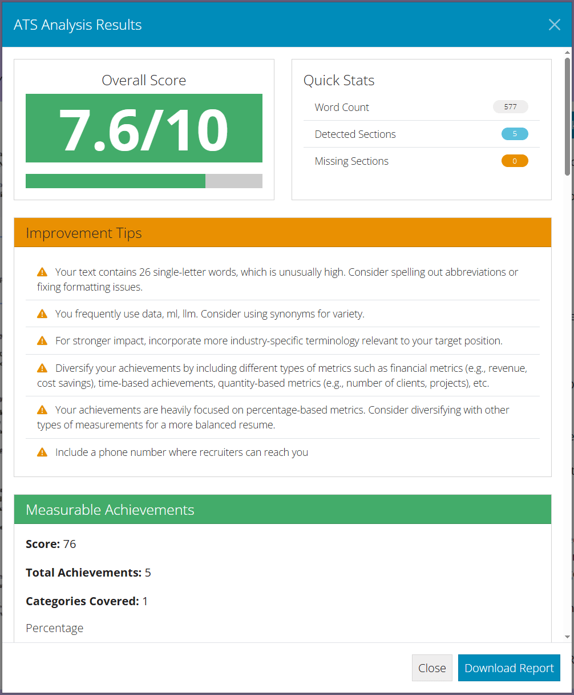
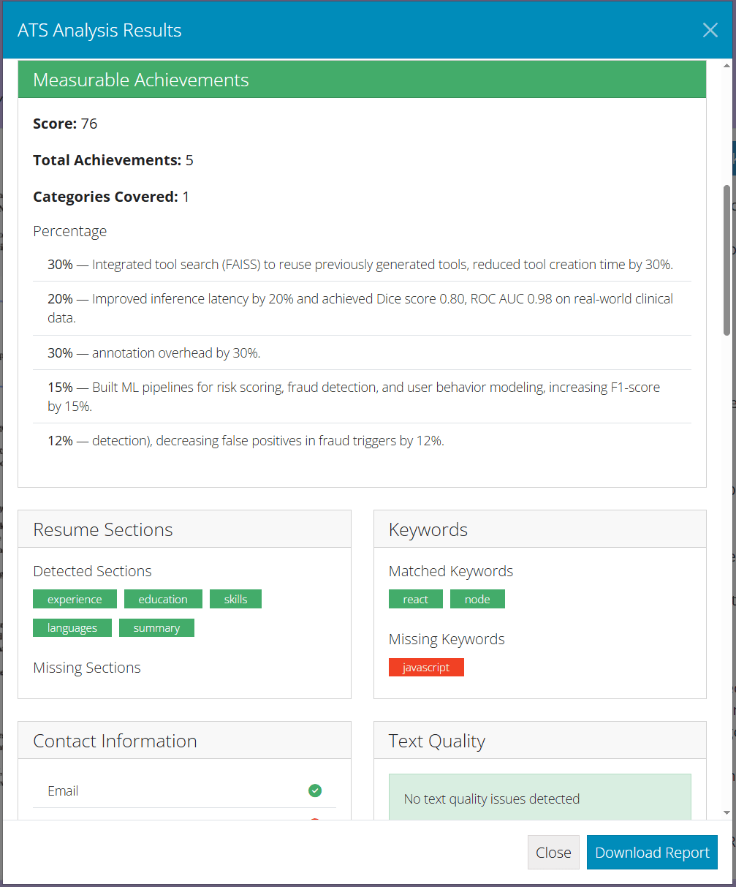

Резюме
Как правильно составить резюме
Структура и общий чек-лист
Быстрый чек-лист
- 1 страница, чёткая иерархия, читаемый шрифт.
- Опыт — в обратном хронологическом порядке, фокус на влиянии.
- Каждый буллет = действие + технология + метрика результата.
- ATS-дружелюбно: используй ключевые слова из вакансии.
- Ссылки: GitHub/Portfolio/Kaggle/Google Scholar — кликабельные.
About / Summary
- роль (ML Engineer / MLE / Data Scientist),
- годы опыта,
- домены (финтех, медтех, соцсети),
- масштаб (MAU/трафик/данные),
- ключевая экспертиза (NLP/CV/RAG/RecSys, MLOps, распределённые системы).
- Завершить фразой про бизнес-ценность.
Сопроводительное письмо (Cover Letter)
- Сопроводительное письмо — кратко (до 1к символов), чёткая иерархия, последовательность изложения.
- Сделать акцент на широком спектре технологий, которые ты использовал.
- Фокус на влиянии: назвать метрики, цифры, которые ты привнес в продукт.
- Завершить фразой про желание работать в компании и почему ты подходишь для этой вакансии.
Опыт (Experience)
Как оформлять опыт
- Company, Role, Dates, Location (Remote/Hybrid при необходимости).
- 3–6 буллетов на место: действие, стек, результат в цифрах.
- Смешивай ML-метрики (AUC, F1, BLEU, WER, PSNR, NDCG) и продукт/инфра (латентность, SLO/SLA, CTR/CR, COGS, $ экономия).
- Покажи вклад в масштаб: микросервисы, Kafka, Kubernetes, кеши, шардирование, CI/CD.
Примеры сильных буллетов
- Развернул RAG-поиск (FAISS/Chroma + LangChain) для службы поддержки, сократив MTTR на 15–25% при P95 ответа < 800 мс.
- Оптимизировал инференс LLM (квантование/dtype/токен-кэш) — снизил latency P95 на 30%, затраты на GPU на 18%.
- Построил пайплайн кредитного скоринга (PySpark + scikit-learn), повысив AUC с 0.78 до 0.84 и снизив FPR на 12% в проде.
- Мигрировал 200+ сервисов в K8s (EKS), уменьшив инфраструктурные расходы в 3 раза и ускорив релизы на 20%.
Навыки (Skills)
Технологии и стек
- ML/DS: PyTorch, Transformers, scikit-learn, spaCy, OpenCV, YOLO, TensorBoard, WandB.
- MLOps/Инфра: Docker, Kubernetes, Kafka, Airflow, MLflow, Prometheus/Grafana.
- Backend: Python (FastAPI), Java (Spring), Go (Gin/Echo), gRPC, PostgreSQL/ClickHouse.
- Vector/LLM: FAISS/Chroma, LangChain/LlamaIndex/LangGraph, RAG, embedders.
- Cloud: AWS (EKS, S3), GCP/Azure эквиваленты — указывать по факту.
Практики качества
- Unit/Integration/E2E тесты для ML API и фиче-пайплайнов.
- Canary/Shadow deployment, мониторинг дрейфа и деградации метрик.
- Feature store, эксперименты/треккинг (MLflow/W&B), reproducibility.
Образование и языки
Education
- BSc/BA: математика/экономика/CS (+ проекты по ML/DS/Алгоритмам).
- MSc: Computer Science / Machine Learning — тезисы/исследования кратко.
Languages
- Russian — Native;
- English — B2/C1 (указать по факту).
Оформление и лайфхаки
Стиль и формулировки
- Используй глаголы действия: built, deployed, optimized, scaled, productionized.
- Избегай пассива и расплывчатости; каждое утверждение — проверяемо.
- Тюнь под вакансию: добавляйт релевантные ключевые навыки и домены.
Типичные ошибки
- Нет цифр/метрик, слишком общий текст.
- Список инструментов без контекста задач/влияния.
- Дублирование технологий, несогласованные даты/форматы.
Где сделать красивое, профессиональное резюме?
Шаблоны Overleaf
Можно начать сразу с моего готового шаблона . Он находится на сайте Overleaf
.tex
). Если что-то непонятно — можно попросить помощи у GPT.
Скомпилировать
Нажми Скомпилировать — Overleaf соберёт проект.
Проверка резюме через ATS (ResumeFrame)
Большинство крупных компаний используют ATS‑системы (Applicant Tracking System), которые автоматически отфильтровывают резюме ещё до того, как его увидит рекрутер. Если в CV не хватает ключевых слов из вакансии или структура «ломает» парсинг, резюме может даже не дойти до человека.
ResumeFrame даёт быстрый фидбек, насколько твоё резюме дружелюбно к ATS и хорошо ли оно «матчится» под конкретную вакансию.
- Зайди на resumeframe.com.
- Загрузи своё CV в PDF (на английском языке).
- Нажми "Check AST Friendliness" и посмотри:
- какой Overall Score показывает система,
- какие ключевые слова/скиллы из вакансии не встречаются в резюме,
- замечания по структуре и читабельности.


Пример проверки резюме через ATS
- Важный тонкий момент: резюме должно быть написано в едином шрифте! Для этого можно как раз-таки использовать, например, overleaf для верстки и рендеринга итогового файла резюме.
- Добавь в разделы Experience / Skills отсутствующие, но релевантные ключевые слова.
- Убедись, что важные термины из вакансий появляются в резюме не один раз, а в нескольких буллетах.
- Проверь, что названия ролей и технологий написаны в стандартном виде (ML Engineer, Data Scientist, Python, PyTorch и т.п.).
- Перепроверь структуру: единый формат дат, читабельные заголовки разделов, без лишних таблиц и сложной верстки.
Примеры успешных резюме и легенд
NLP / LLM / RAG Engineer
- В резюме каждый проект привязан к результату и метрикам.
- В легенде проекты раскрыты как истории: задача, архитектура, решения, вопросы интервьюера.
- Есть готовые блоки для обсуждения MLSD: retrieval, agents, latency, monitoring, CI/CD.
Multimodal / NLP ML Engineer
- Сильный фокус на production-проектах и измеримых улучшениях: latency, F1, ROC AUC, DSC, Recall@5.
- Легенда хорошо раскрывает архитектуру: Databricks, Delta Lake, OCR, FastAPI, Docker, CI/CD, Prometheus/Grafana.
- Есть полезные истории для MLSD: обработка PDF, мультимодальный retrieval, оптимизация CLIP-инференса.
ML Engineer (InfoSec)
- Хорошо показана связка ML и домена: DBSCAN, XGBoost, sliding window, Kafka, Redis, XAI.
- В легенде много готовых ответов на вопросы интервьюера: cold start, pseudo-labeling, FAISS, chunking, hallucinations.
- Есть сильный production-контекст: air-gapped контур, on-premise inference, monitoring, incremental sync.